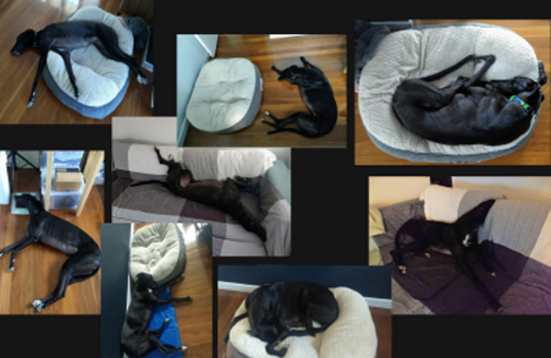
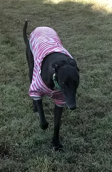
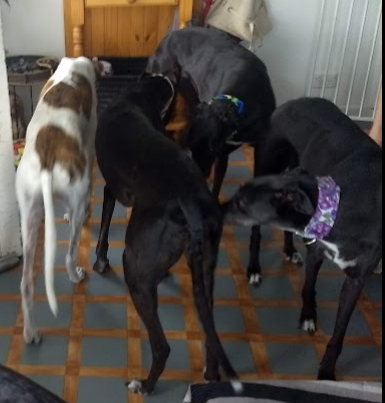
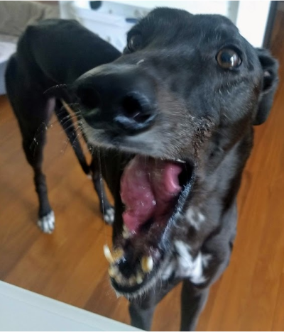

Do my ears look similar enough to Batman's?
Nowadays, I am thinking a lot about being a dog actress. I especially enjoy watching movies
such as Rex, Hachi: A dog's tale, or the Dog's purpose. While I know being an actress requires hard to focus, strength, commitment
and persistence, I know I would be able to do that. Just think about it, I was trained to be an athlete all my life, I know hard
work. I am also exceptionally smart, sometimes I outsmart my owners and when they are outside, I slip onto the couch. They never know it,
or at least they never scold me for it. Anyhow, I still try to keep my shape, and look at those ears, I could be Batman's double. You can not
deny the resemblance.
Greyhound sleeping positions 101

Greyhounds are a very relaxed breed, which means we are good at sleeping.
We can sleep for 20 hours a day and will often nap during the day as well. I also love
to be close to my humans, when I was younger I spent some time in a different room, but now I am always with them.
My only real issue is that they do not let me sleep in their bed despite how small I am. I also sleep like a log, never kicking or rotating like a ventilator.
All right, sometimes I sleep in weird positions with my legs in a pretzel or roaching on my back with straight legs in the air. Sometimes I have bed fails, sleeping close to my beds
or my head might touch the brink of the bed. This exercise is extremely important so I can value my comfy bed more when I sleep in it. But look at me how cute I am, you would let me sleep in your bed, right?
I am a fashion icon in my pullover

This year stripes are the most chicest choice.
Why do I need clothes, you ask? Unfortunately, the cold badly affects Greyhounds.
As a result of my low body fat and short single-layer coat, I have a hard time retaining heat. It is common for Greys, Whippets, and Italian Greyhounds to shake during the cooler months because this is how we warm up our muscles.
That is also how I wake up my owners, but at times I also scream to their faces to let them know I am cold at night time.
Additionally, I dislike rain, I do not want to go outside. But my owners make me, so I need an extra layer of clothes to go for a walk in that nasty weather.
So, if you are planning to walk your sighthound in the rain, you will need a waterproof coat or onesie. Swimming, puddles, and rain are always a no-no for us though.
Social life of a black greyhound

Every season I catch up with my friends to sniff around.
Socializing is important to expose and allow dogs like me to experience all aspects of greyhound life, including people, places, dogs.
So I regularly catch up with my friends to have a sniff party and share our experiences.
You know, I tell them that when I was a small pup, I lived with a lot of other grey pups, but we lived in a small cage. My early education was extremely hard on me and my body, I ran a lot and I still don't know how to play like other dogs.
To be honest, while I like being around other greys, I am a bit too bossy and strong headed. But I always let them to follow my lead. Every time I am at my pet sitter's house I over dominate her dogs in their own home.
But hey, I am 7 years old, I do not think I'll change now. And the best part is, that my humans love me this way.
Why do I love eating banana?

I think my love for banana is simple, it is as sweet as me.
Like all dogs, I also enjoy it when my owners give me treats. And while banana does not seem
as an obvious choice, but it is for me as for example a good chocolate cake for humans.
Bananas are sweet and dogs like me love sweeties. And not just that it has many health benefits
such as it contains a lot of healthy minerals and vitamins. Have you looked at my fur? It is extremely
shiny...banana is one of the reasons. However, my humans give me a small portion of banana just as a treat, to keep
me healthy and avoid negative side effects. But to be honest, I could always eat more.